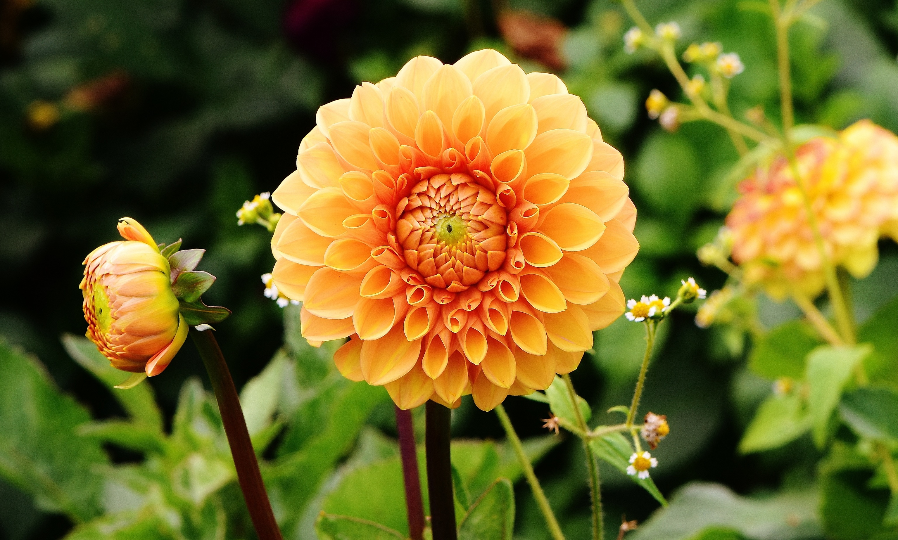
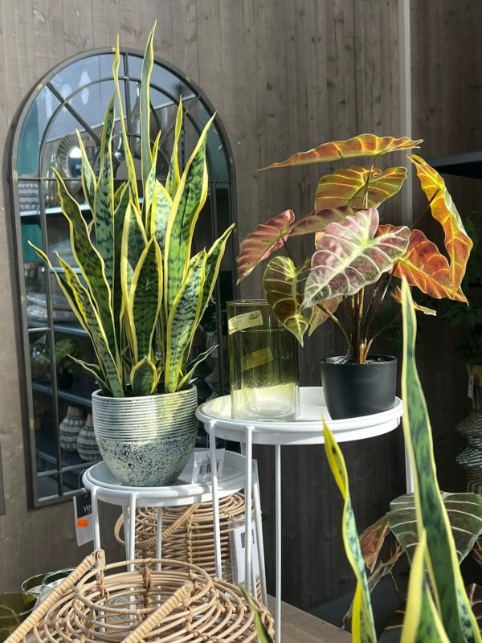
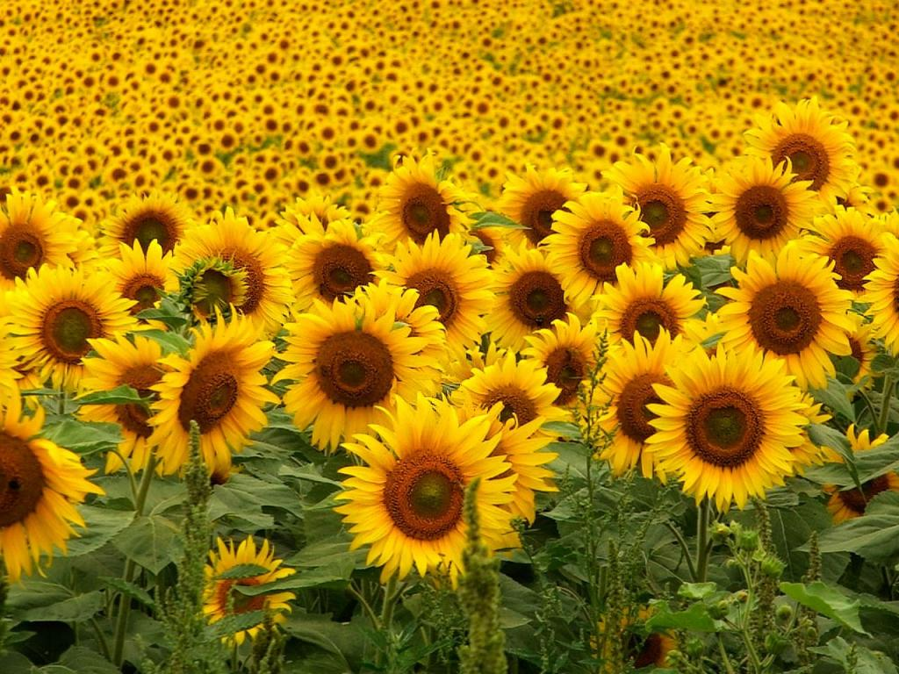
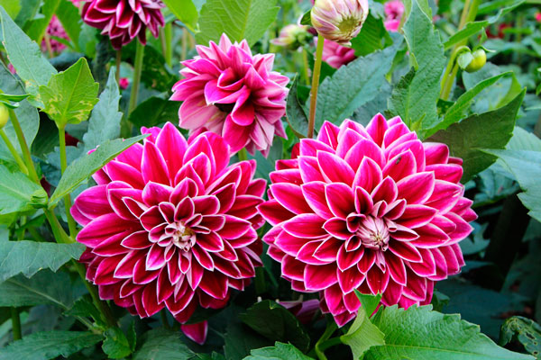
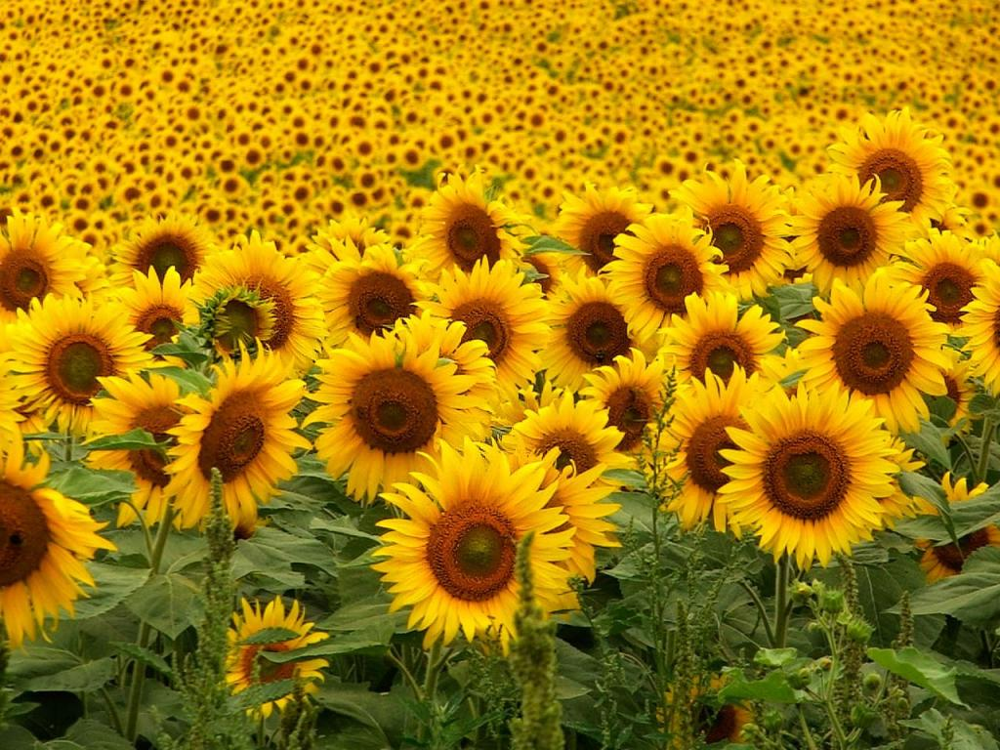
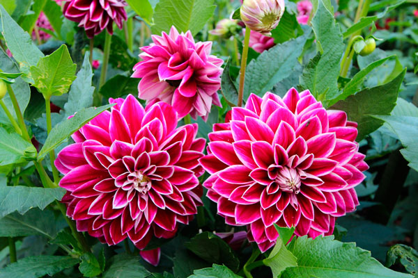
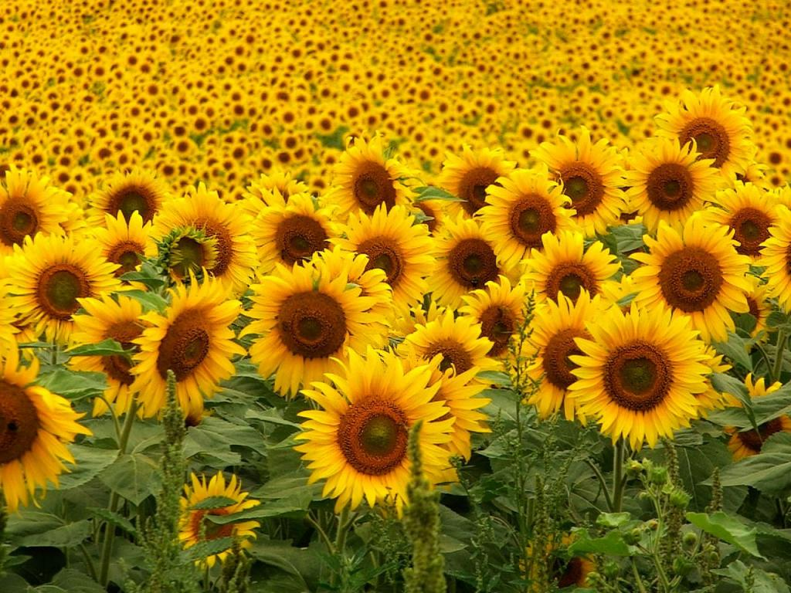
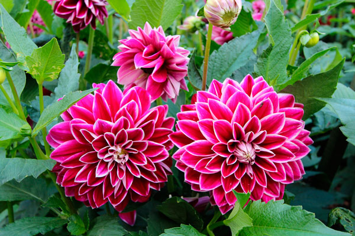

Jardinería
La fascinante sansevieria es una planta popular en jardinería por el atractivo de sus hojas que le han hecho ganar el reconocimiento que otorga la Real Sociedad de Horticultura de Inglaterra al Mérito del Jardín. Además, la planta tiene una gran resistencia a las condiciones climáticas desfavorables. Sin embargo, es tóxica para los gatos y perros si la comen.


 




